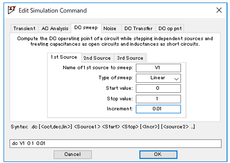

回路図の作成
以下のような CMOS インバータ回路を作成します。PMOS とNMOS、DC 解析用の電源を配置して配線を行います。

PMOS, NMOS の設定
- Model Name: P_50n (PMOS), N_50n (NMOS)
- Length (L): 50nm
- Width (W): 500nm
電源の設定
- V1: VIN入力、DC解析で0Vから 1V までスイープ
- V2: VDD 電源、1V 固定
シミュレーション設定
メニューの Simulate > Edit Simulation Cmd を開き、DC 解析の設定を行い、シミュレーションを実行してください。
シミュレーション結果
青色の線は、入力電圧 Vin が 0V から 1V まで 0.01V ずつ変化している様子を示しています。
緑色の線は出力電圧を示しており、入力電圧が0V のとき出力は1V、入力が 1V になると出力が0Vになることが確認できます。